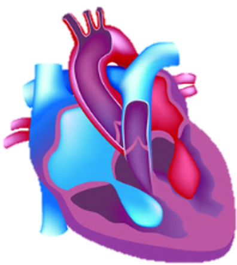
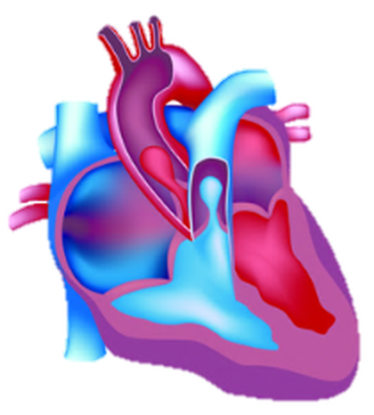
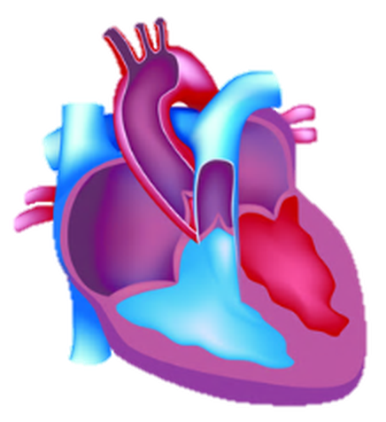
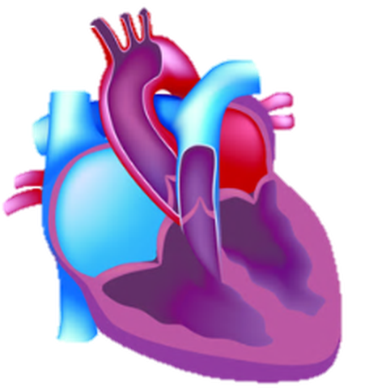
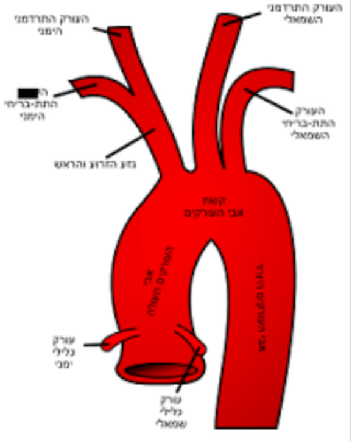

מבנה הלב
התאמה בין מבנה לתפקוד
שלושה חלקים: 1 · התפקידים של הלב, 2 · המבנה שלו, 3 · ההתאמה בין המבנה לתפקידים.
 מקור: מט״ח
מקור: מט״חבבית החזה, בין שתי הריאות, עם נטייה שמאלה
הלב בגודל של אגרוף בערך. הוא פועם כ־70 פעמים בדקה במנוחה, כ־100,000 פעמים ביממה, לאורך כל החיים.
 מקור: מט״ח
מקור: מט״חלמה במערכת ההובלה יש משאבה?
- הלב מתכווץ
- נוצר לחץ דם גבוה בעורקים
- הדם זורם במהירות גם דרך מיליארדי נימים, וגם נגד כוח הכובד
- הדם מגיע לכל תאי הגוף בכל רגע
 מקור: מט״ח
מקור: מט״חארבעת התפקידים של הלב
הזרמת דם עשיר בחמצן לכל תאי הגוף, דרך המחזור הגדול.
הזרמת דם דל בחמצן לריאות, דרך המחזור הקטן.
קליטת הדם שחוזר מהגוף. הדם הזה דל בחמצן ועשיר בפחמן דו־חמצני.
קליטת הדם שחוזר מהריאות. הדם הזה עשיר בחמצן.
בתאים מתרחשת נשימה תאית אווירנית: פירוק גלוקוז בנוכחות חמצן ויצירת ATP. ככל שמגיע לתאים יותר חמצן, הנשימה התאית מתרחשת בקצב גבוה יותר, ונוצר יותר ATP לתהליכי החיים.
הלב הוא שריר: שריר הלב
- רוב הדופן של הלב בנויה מרקמת שריר מיוחדת: שריר הלב.
- שריר הלב שונה משרירי השלד: הוא מתכווץ באופן קצבי ובלתי רצוני, בלי מנוחה, לאורך כל החיים.
- בתאי שריר הלב יש מספר רב מאוד של מיטוכונדריות.
- הצד הפנימי של הדופן חלק.
 ניתוח לב · מקור: מט״ח
ניתוח לב · מקור: מט״חארבעה חללים ומחיצה
- הלב מחולק לחצי ימני ולחצי שמאלי.
- בין שני החצאים יש מחיצה שלמה, בלי פתחים.
- בכל חצי יש עלייה למעלה וחדר למטה.
- סך הכול: עלייה ימנית, חדר ימני, עלייה שמאלית, חדר שמאלי.
- א. דם עשיר בחמצן
- ב. דם עשיר בפחמן דו־חמצני
- ג. דם עשיר בחמצן ובפחמן דו־חמצני
- ד. דם עשיר בחמצן, ודם עשיר בפחמן דו־חמצני
ד. בחצי השמאלי יש דם עשיר בחמצן, ובחצי הימני דם עשיר בפחמן דו־חמצני. אלה שני סוגי דם נפרדים.
 חתך אורך של הלב · מקור: מט״ח
חתך אורך של הלב · מקור: מט״חלכל חלל, כלי הדם שלו
| חלל | כלי דם | כיוון |
|---|---|---|
| עלייה ימנית | וריד נבוב עליון ווריד נבוב תחתון | מהגוף אל הלב |
| חדר ימני | עורק הריאה | מהלב אל הריאות |
| עלייה שמאלית | ורידי הריאה | מהריאות אל הלב |
| חדר שמאלי | אבי העורקים | מהלב אל הגוף |
ורידים מגיעים לעליות. עורקים יוצאים מהחדרים.
איך מזהים ימין ושמאל באיור?
באיור, ימין ושמאל הם של האדם. לכן החצי הימני של הלב מופיע משמאלנו.
הדרך הבטוחה לזהות: מוצאים את אבי העורקים. הוא יוצא מהחדר השמאלי.
באיורי מט״ח כתוב "שסתום". בשיעור משתמשים במילה "מסתם".
 מקור: מט״ח
מקור: מט״חארבעה מסתמים
בכל חצי של הלב, בין העלייה לחדר שמתחתיה. במט״ח: "שסתומי מפרשים". המסתם מחובר בחוטים דקים לדופן החדר.
בפתח היציאה של אבי העורקים ושל עורק הריאה. במט״ח: "שסתומי כיסים".
המסתמים הם דשים דקים. הם נפתחים רק לכיוון אחד.
מקור: מט״חלא כל הדפנות באותו עובי
השכבה השרירית בדופן של כל חלל בעובי אחר:
כלי הדם הכליליים
- על פני הלב עוברים כלי דם: כלי הדם הכליליים.
- שני עורקים כליליים, ימני ושמאלי, יוצאים מבסיס אבי העורקים, מיד מעל המסתם.
- הם מתפצלים לעורקים קטנים ולנימים בתוך שריר הלב.
- ורידים כליליים מחזירים את הדם לעלייה הימנית.
"כליל" = כתר. כלי הדם מקיפים את הלב כמו כתר.
 מקור: מט״ח
מקור: מט״חבדופן העלייה הימנית: קוצב הלב
- קוצב הלב הוא קבוצה קטנה של תאי שריר לב מיוחדים, בדופן העלייה הימנית.
- תאי הקוצב יוצרים אותות חשמליים בעצמם, בקצב קבוע, גם בלי אות מהמוח.
- בין העליות לחדרים יש קבוצה נוספת של תאים כאלה: צומת העליות־חדרים (AV Node).
- מהקוצב יוצאים מסלולי הולכה בשריר הלב: קודם אל העליות, דרך הצומת, ואחר כך אל החדרים.
 SA Node = קוצב הלב · מקור: מצגת קוצב הלב
SA Node = קוצב הלב · מקור: מצגת קוצב הלבלעלייה הימנית של הלב מגיע דם:
- א. בוורידים, והוא מכיל הרבה חמצן ומעט CO₂
- ב. בעורקים, והוא מכיל הרבה חמצן ומעט CO₂
- ג. בוורידים, והוא מכיל הרבה CO₂ ומעט חמצן
- ד. בעורקים, והוא מכיל הרבה CO₂ ומעט חמצן
ג. העלייה הימנית קולטת את הדם שחוזר מהגוף בוורידים הנבובים. בתאי הגוף הדם מסר חמצן וקלט פחמן דו־חמצני, תוצר של הנשימה התאית.
עד עכשיו: התפקיד, ואחר כך המבנה. עכשיו: ההתאמה ביניהם
ארבעה תפקידים: הזרמה לגוף, הזרמה לריאות, קליטה מהגוף, קליטה מהריאות.
שריר הלב, חללים ומחיצה, כלי דם, מסתמים, עובי הדופן, קוצב הלב, כלי דם כליליים.
לכל מבנה: מה הוא גורם או מאפשר, ומה התוצאה בתאי הגוף.
- מבנה
- מה המבנה גורם או מאפשר
- התוצאה בתאי הגוף
שני מסלולים נפרדים: המחיצה
בלב עוברים שני סוגי דם: דם עשיר בחמצן (שמאל) ודם דל בחמצן (ימין).
- מחיצה שלמה בין החצי הימני לחצי השמאלי
- הדם העשיר בחמצן (שמאל) לא מתערבב עם הדם הדל בחמצן (ימין)
- מהחדר השמאלי יוצא לגוף דם בריכוז חמצן גבוה
- לתאי הגוף מגיע הרבה חמצן
- נשימה תאית אווירנית בקצב גבוה, ונוצר ATP רב
 פתח במחיצה בין החדרים · מקור: מט״ח
פתח במחיצה בין החדרים · מקור: מט״חלעתים רחוקות נולדים תינוקות עם פתח בין שני החדרים. אצל התינוקות האלה, הדם היוצא מן החדר השמאלי:
- א. עשיר בחמצן יותר מהרגיל
- ב. עשיר בפחמן דו־חמצני יותר מהרגיל
- ג. זורם לריאות במקום אל הגוף
- ד. זורם בלחץ גדול מהרגיל
- פתח במחיצה
- דם עשיר בחמצן ודם דל בחמצן מתערבבים
- מהחדר השמאלי יוצא לגוף דם בריכוז חמצן נמוך מהרגיל ובריכוז CO₂ גבוה מהרגיל
- לתאי הגוף מגיע פחות חמצן
- קצב הנשימה התאית האווירנית בתאים יורד, נוצר פחות ATP, והתינוק חלש ומתעייף מהר
את הפגם אפשר לתקן בניתוח.
כשחלל בלב מתכווץ, נוצר בו לחץ. ככל שהשכבה השרירית בדופן עבה יותר, ההתכווצות חזקה יותר והלחץ גבוה יותר.
החדר השמאלי: הדופן העבה ביותר
- שכבה שרירית עבה בדופן החדר השמאלי: הרבה תאי שריר
- התכווצות חזקה
- לחץ דם גבוה מאוד באבי העורקים
- הדם זורם לכל הגוף: למרחקים גדולים, נגד כוח הכובד, דרך מיליארדי נימים
- חמצן וגלוקוז מגיעים לכל תאי הגוף, גם הרחוקים ביותר, והנשימה התאית בהם מתרחשת
על פי בגרות תשע״ז, שאלון 43381, שאלה 2
החדר הימני מזרים דם רק לריאות, שנמצאות ליד הלב. התכווצות חלשה יותר יוצרת לחץ נמוך יותר בעורק הריאה, והלחץ הזה מספיק להזרמת הדם דרך נימי הריאה. שם הדם נטען בחמצן.
העליות: דופן דקה, לחץ נמוך
כשהעליות נרפות, הלחץ בהן נמוך מהלחץ בוורידים, והדם זורם אליהן.
- הדם חוזר ללב בוורידים בלחץ הנמוך ביותר במערכת הדם
- הדופן של העליות דקה וגמישה, ומתמתחת בקלות
- העליות מתמלאות בדם גם בלחץ נמוך
- קליטת כל הדם שחוזר מהגוף ומהריאות
- העליות מזרימות דם רק לחדרים שמתחתן, מרחק קצר
- התכווצות של דופן דקה מספיקה למילוי החדרים
ובכל החללים: הצד הפנימי של הדופן חלק, והחיכוך בין הדם לדופן קטן.
שריר הלב מתכווץ כל הזמן. מה מאפשר את זה?
- בתאי שריר הלב מספר רב מאוד של מיטוכונדריות
- נשימה תאית אווירנית בקצב גבוה בתאי השריר
- נוצר ATP רב, באופן רציף
- שריר הלב מתכווץ שוב ושוב, כל החיים, בלי להתעייף
- הדם זורם בגוף ברציפות, וחמצן וגלוקוז מגיעים לתאים בכל רגע
שריר השלד עלול להתעייף, ובמאמץ חלק מהאנרגיה בו מופקת בתסיסה לקטית. שריר הלב מקבל הרבה חמצן ומפיק ATP כמעט רק בנשימה תאית אווירנית, ולכן ממשיך להתכווץ בלי עייפות.
מה גורם לשריר הלב להתכווץ?
בדופן העלייה הימנית. תאי שריר לב מיוחדים יוצרים אותות חשמליים בעצמם, כ־60–100 בדקה במנוחה, גם בלי אות מהמוח. הקצב של הלב נקבע כאן.
בין העליות לחדרים. האות מהקוצב הראשי מגיע אליו ומתעכב בו כ־0.1 שנייה, ומשם עובר לחדרים. אם הקוצב הראשי לא פועל, הקוצב המשני יוצר אותות בעצמו, בקצב איטי יותר: כ־40–60 בדקה.
- הקוצב הראשי יוצר אות חשמלי
- האות מתפשט בעליות, והעליות מתכווצות
- האות מתעכב בקוצב המשני, והחדרים מתמלאים בדם
- האות עובר לחדרים, והם מתכווצים
- האות הבא נוצר, והלב מתכווץ שוב: פעימה אחרי פעימה, כל החיים
SA Node = קוצב ראשי · AV Node = קוצב משני · מקור: מצגת קוצב הלבהאותות החשמליים שגורמים להתכווצות נוצרים בקוצב הלב, בתוך הלב עצמו. המוח רק משנה את הקצב.
הקצב משתנה
- במאמץ: אותות עצביים מהמוח והורמון האדרנלין
- תאי הקוצב יוצרים אותות בקצב מהיר יותר
- קצב הלב עולה, ותפוקת הלב עולה
- יותר חמצן וגלוקוז מגיעים בכל דקה לשרירים הפעילים
המוח והאדרנלין משנים את הקצב. הפעימה עצמה נוצרת בקוצב.
מקור: מט״חהלב מתכווץ. למה הדם זורם רק קדימה?
- המסתמים נסגרים כשהלחץ מאחוריהם גבוה מהלחץ לפניהם
- הדם לא חוזר לאחור, וזורם רק בכיוון אחד: עליות ← חדרים ← עורקים
- כל הדם שבחדר יוצא בכל התכווצות לעורק
- בכל פעימה יוצאת כמות דם גדולה לגוף ולריאות
- חמצן וגלוקוז מגיעים לתאים, והנשימה התאית מתרחשת בקצב גבוה
 קול ראשון: סגירת המסתמים בין העליות לחדרים, בתחילת הסיסטולה של החדרים. קול שני: סגירת המסתמים בין החדרים לעורקים, בתחילת הדיאסטולה. · מקור: מט״ח
קול ראשון: סגירת המסתמים בין העליות לחדרים, בתחילת הסיסטולה של החדרים. קול שני: סגירת המסתמים בין החדרים לעורקים, בתחילת הדיאסטולה. · מקור: מט״חלאדם יש פגיעה במסתם בין החדר הימני ובין עורק הריאה. המסתם לא נסגר כראוי. למה הפגיעה עלולה לגרום?
- א. לחזרה של דם דל בחמצן לחדר הימני
- ב. לערבוב של דם עשיר בחמצן עם דם דל בחמצן
- ג. לזרימת דם מן החדר הימני לחדר השמאלי
- ד. לחסימה של העורקים הכליליים
- המסתם לא נסגר כשהחדר הימני נרפה
- חלק מהדם חוזר מעורק הריאה לחדר הימני
- פחות דם מגיע בכל פעימה לריאות, ופחות דם נטען בחמצן
- פחות חמצן מגיע לתאי הגוף, והנשימה התאית בהם יורדת
שימו לב: מסתם פגום גורם לזרימה לאחור, לא לערבוב. ערבוב נגרם מפתח במחיצה. בבגרות כ־70% מהנבחנים בחרו בתשובה ב.
פעימה אחת, שלב אחר שלב




- הדם נכנס מהוורידים לעליות.
- העליות מתכווצות, והדם עובר לחדרים.
- החדרים מתכווצים, והדם עובר לעורקים.
- הלב נרפה ומתמלא שוב בדם.
כיוון הזרימה: ורידים ← עליות ← חדרים ← עורקים. שתי העליות מתכווצות יחד, ושני החדרים מתכווצים יחד.
איורי פעולת הלב: מט״חראינו: האות מתעכב בקוצב המשני, ולכן העליות מתכווצות לפני החדרים.
- החדרים מתכווצים לפני שהתמלאו בדם מהעליות
- בכל פעימה יוצאת מהחדרים פחות דם
- לתאי הגוף מגיעים פחות חמצן וגלוקוז
- הנשימה התאית בתאים יורדת
סיסטולה ודיאסטולה
שלב ההתכווצות של חלל בלב. קודם סיסטולה של העליות, ומיד אחריה סיסטולה של החדרים.
שלב ההרפיה של חלל בלב. בזמן הדיאסטולה החלל מתמלא בדם.
| שלב בפעימה (בקצב של כ־75 פעימות בדקה) | העליות | החדרים | משך בערך |
|---|---|---|---|
| 1 · סיסטולה של העליות | מתכווצות | נרפים ומתמלאים | 0.1 שנייה |
| 2 · סיסטולה של החדרים | נרפות ומתמלאות | מתכווצים | 0.3 שנייה |
| 3 · דיאסטולה של כל הלב | נרפות | נרפים | 0.4 שנייה |
פעימה שלמה נמשכת כ־0.8 שנייה. בחצי מהזמן הלב כולו נרפה ומתמלא בדם.
המסתמים בכל שלב של הפעימה
| שלב | מסתם בין עלייה לחדר | מסתם בין חדר לעורק | לאן זורם הדם |
|---|---|---|---|
| סיסטולה של העליות | פתוח: הלחץ בעלייה גבוה מהלחץ בחדר | סגור: הלחץ בעורק גבוה מהלחץ בחדר | מהעליות לחדרים |
| סיסטולה של החדרים | סגור: הלחץ בחדר גבוה מהלחץ בעלייה | פתוח: הלחץ בחדר גבוה מהלחץ בעורק | מהחדרים לעורקים: לאבי העורקים ולעורק הריאה |
| דיאסטולה | פתוח: הלחץ בעלייה גבוה מהלחץ בחדר הנרפה | סגור: הלחץ בעורק גבוה מהלחץ בחדר הנרפה | מהוורידים לעליות, ומשם לחדרים |
המסתמים נפתחים ונסגרים באופן סביל, בהשפעת הפרש הלחצים משני צדיהם. שני סוגי המסתמים אף פעם לא פתוחים יחד.
120 = לחץ סיסטולי: הלחץ בעורקים בזמן הסיסטולה של החדרים, כשהדם נדחף אליהם. 80 = לחץ דיאסטולי: הלחץ בעורקים בזמן הדיאסטולה, כשהחדרים נרפים. שני הלחצים נמדדים בעורק. (על פי מבחן רבעון 1 תש״ף, כיתה י׳)
לא. הדופן עבה, והדם שבחללים לא מגיע לרוב תאי השריר. החמצן מגיע לתאי שריר הלב דרך כלי הדם הכליליים.
- העורקים הכליליים יוצאים מבסיס אבי העורקים
- מגיע אליהם דם עשיר בחמצן, בלחץ גבוה, מיד ביציאה מהלב
- הם מתפצלים לנימים בכל שכבת השריר
- חמצן וגלוקוז מגיעים לכל תאי שריר הלב
- נשימה תאית בקצב גבוה, ATP רב, והתכווצות רציפה של הלב

מוצא העורקים הכליליים בבסיס אבי העורקים · מקור: מצגת הלבחסימה של עורק כלילי
- משקעי שומן מצרים את העורק הכלילי, עד חסימה
- לתאי שריר הלב שמעבר לחסימה לא מגיע חמצן
- הנשימה התאית האווירנית בתאים נפסקת, ולא נוצר מספיק ATP
- התאים מתים: אוטם שריר הלב (התקף לב)
- האזור המת לא מתכווץ, והזרמת הדם לגוף נפגעת
חסימה באחד מהעורקים האלה פוגעת באזור של השריר שהעורק מספק לו דם · מקור: מט״חבמנוחה כ־250 מ"ל בדקה, כ־5% מתפוקת הלב. במאמץ כ־750 מ"ל בדקה, פי 3. (הנתונים משיעור 3)
בעיקר בזמן הדיאסטולה. בסיסטולה שריר החדר המתכווץ לוחץ על כלי הדם שבתוכו, והזרימה בהם קטנה.
על התקף לב, גורמי סיכון וטיפולים: בשיעור על מחלות לב.
התאמה בין מבנה לתפקוד
| מבנה | מה המבנה גורם או מאפשר | התוצאה בגוף |
|---|---|---|
| מחיצה שלמה | שני מסלולים נפרדים, אין ערבוב | לגוף מגיע דם בריכוז חמצן גבוה: נשימה תאית בקצב גבוה |
| דופן עבה בחדר השמאלי | התכווצות חזקה, לחץ גבוה באבי העורקים | הדם מגיע לכל תאי הגוף, גם הרחוקים |
| דופן דקה בחדר הימני | לחץ נמוך יותר בעורק הריאה | הזרמה לריאות הקרובות |
| דופן דקה וגמישה בעליות | מילוי בדם בלחץ נמוך, בזמן ההרפיה | קליטת הדם שחוזר בוורידים |
| דופן פנימית חלקה | חיכוך קטן | זרימה קלה של הדם |
| שריר הלב: מיטוכונדריות רבות | ATP רב, התכווצות בלי עייפות | זרימת דם רציפה כל החיים |
| קוצב ראשי וקוצב משני | אותות חשמליים; עליות לפני חדרים | חדרים מלאים בכל פעימה; הקצב עולה במאמץ |
| מסתמים | זרימה בכיוון אחד, לפי הפרשי הלחצים | כמות דם גדולה יוצאת בכל פעימה |
| כלי דם כליליים | חמצן וגלוקוז לתאי שריר הלב | נשימה תאית בשריר הלב והתכווצות רציפה |
איזה מן המסלולים האלה, שהדם עובר בהם, הוא הארוך ביותר?
- א. מן החדר השמאלי לעלייה השמאלית
- ב. מן העלייה הימנית לחדר הימני
- ג. מן החדר הימני לעלייה השמאלית
- ד. מן החדר השמאלי לעלייה הימנית
ד. מהחדר השמאלי, דרך אבי העורקים וכל הגוף, ובחזרה בוורידים הנבובים לעלייה הימנית: המחזור הגדול כולו.
מעבדת הלב
זיהוי המבנים על האיור, ואחר כך התאמה בין כל מבנה לתפקוד שלו.
היחידה מתבססת על חומרי מט״ח ומורחבת בחומרים נוספים